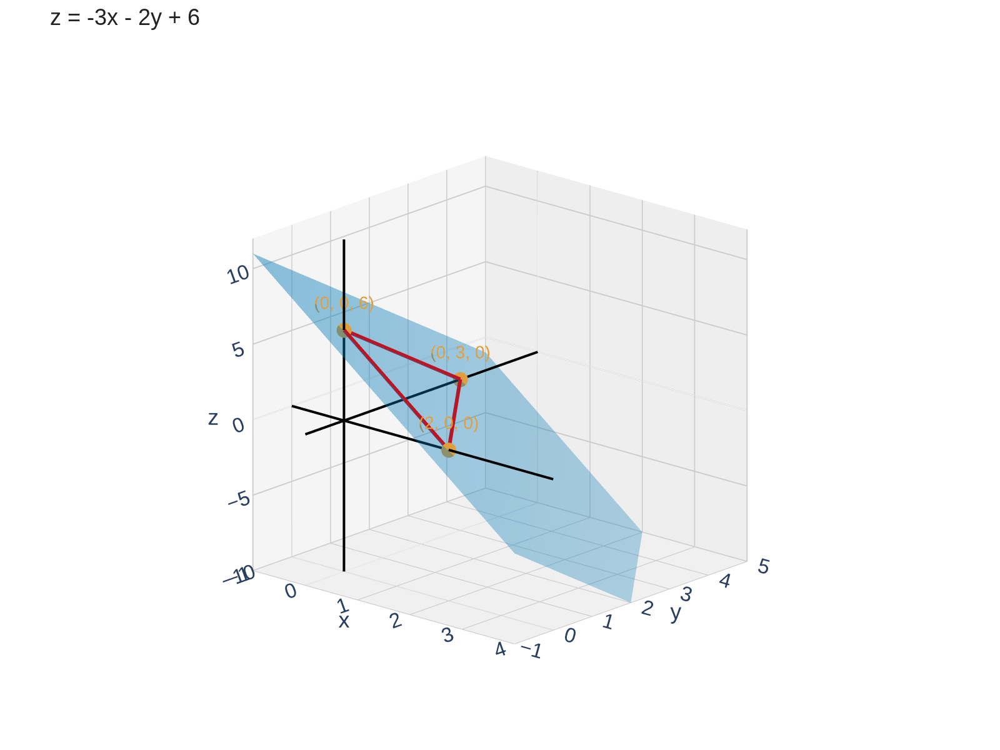
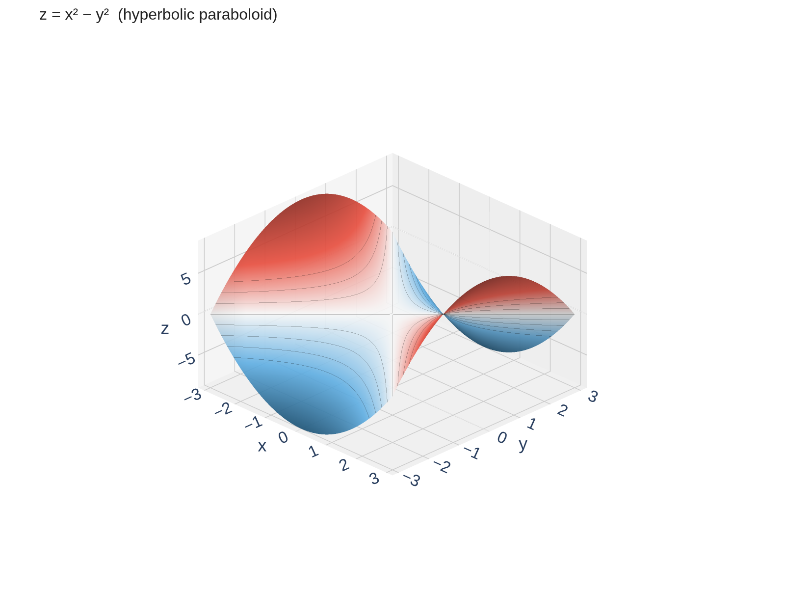
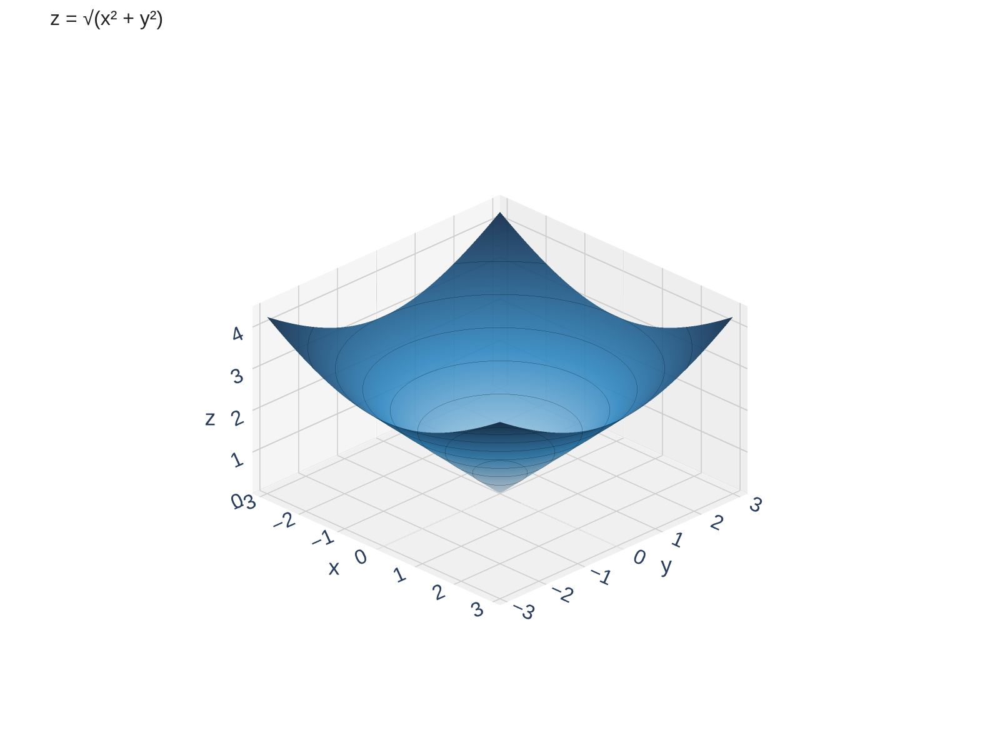
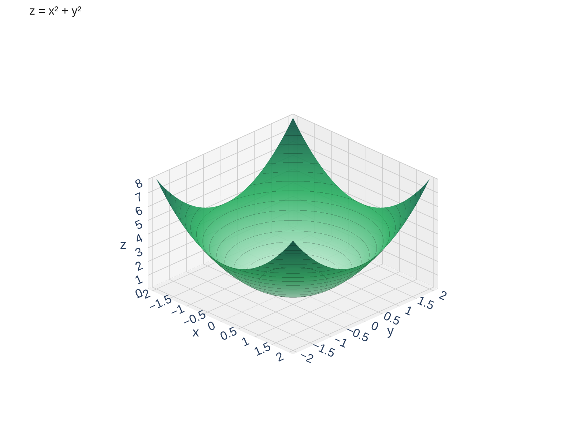
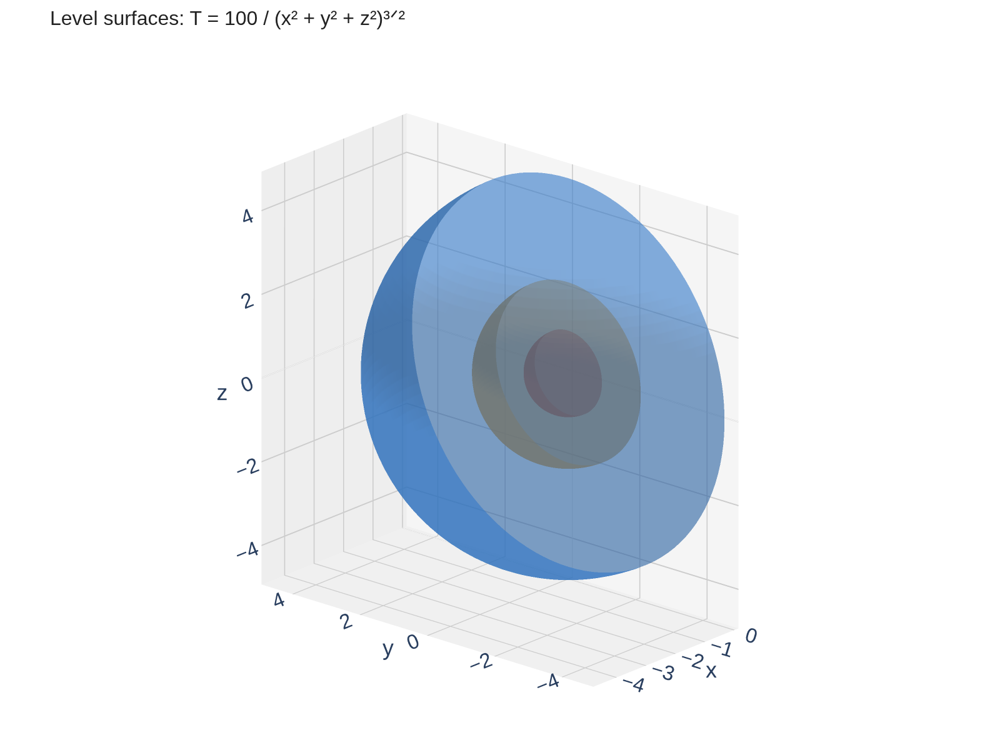

Functions of Several Variables
In Calc I and II, every function had one input and one output: \(y = f(x)\).
But in the real world, most quantities depend on more than one variable:
- Temperature in a room depends on position \((x, y, z)\)
- Your grade depends on homework, quizzes, and exams
- Wind chill depends on temperature and wind speed
A function of two variables is a rule that assigns to each ordered pair \((x, y)\) in a set \(D \subseteq \mathbb{R}^2\) a unique real number \(z\):
\[z = f(x, y)\]
- Domain: the set \(D\) of valid inputs \((x, y)\)
- Range: the set of all output values \(z = f(x,y)\)
This extends naturally: \(w = f(x, y, z)\) is a function of three variables, and so on.
Same idea as Calc I, but now the input is a point in \(\mathbb{R}^2\) (or \(\mathbb{R}^3\)) instead of a single number.
Example 1: Finding the Domain
Find and sketch the domain of \(f(x,y) = x \ln(x^2 - y)\).
Look for restrictions, set up and solve inequalities, sketch.
We need \(x^2 - y > 0\), which means \(y < x^2\).
The domain is the set of all points \((x, y)\) that lie strictly below the parabola \(y = x^2\).
\[D = \{(x, y) \mid y < x^2\}\]
The boundary \(y = x^2\) is not included (we need strictly greater than zero inside the logarithm).

Your Turn: Find the Domain
Find the domain of \(g(x, y) = \dfrac{\sqrt{y - x^2}}{1 - x^2}\).
Identify both restrictions, then describe and sketch the domain.
Restriction 1: Square root requires \(y - x^2 \geq 0\), so \(y \geq x^2\).
Restriction 2: Denominator requires \(1 - x^2 \neq 0\), so \(x \neq \pm 1\).
\[D = \{(x, y) \mid y \geq x^2 \text{ and } x \neq \pm 1\}\]
This is the region on or above the parabola \(y = x^2\), with two vertical lines removed.
Graphs of Functions of Two Variables
In Calc I, the graph of \(y = f(x)\) was a curve in \(\mathbb{R}^2\).
Now the graph of \(z = f(x, y)\) is a surface in \(\mathbb{R}^3\):
The graph of \(f\) is the set of all points \((x, y, z)\) in \(\mathbb{R}^3\) such that \(z = f(x, y)\) and \((x, y) \in D\).
\[\text{graph} = \{(x, y, z) \mid z = f(x, y),\; (x, y) \in D\}\]
Input = point in the \(xy\)-plane. Output \(z\) = height above (or below) that point. The collection of all these heights forms a surface.
Graphs of Functions of Two Variables
Sketch the graph of \(f(x, y) = -3x - 2y + 6\).
Recognize: This is \(z = -3x - 2y + 6\), which is linear in \(x\) and \(y\). A linear equation in three variables is a plane.
Find the intercepts and sketch the plane.
Find the intercepts by setting two variables to zero:
- \(x\)-intercept: set \(y = 0, z = 0\) \(\rightarrow\) \(x = 2\) \(\rightarrow\) point \((2, 0, 0)\)
- \(y\)-intercept: set \(x = 0, z = 0\) \(\rightarrow\) \(y = 3\) \(\rightarrow\) point \((0, 3, 0)\)
- \(z\)-intercept: set \(x = 0, y = 0\) \(\rightarrow\) \(z = 6\) \(\rightarrow\) point \((0, 0, 6)\)
Connect these three points to form a triangular portion of the plane in the first octant. The full plane extends in all directions.

Traces: Slicing a Surface
A 3D surface can be hard to visualize all at once. One strategy: slice it with a plane and look at the resulting curve.
A trace of a surface is the curve of intersection when the surface is sliced by a plane.
- Horizontal trace (or cross-section): set \(z = c\) (a constant) and see what curve remains in the \(xy\)-plane
- Vertical trace: set \(x = c\) or \(y = c\) and see the resulting curve
Analogy: Think of slicing a loaf of bread. Each slice reveals a 2D cross-section of the 3D shape.
Or think of a topographic map — each contour line is where the terrain has a specific elevation.
Traces reduce a 3D problem to a 2D curve — something you already know how to analyze from Calc I.
Level Curves and Contour Maps
The level curves of \(f(x, y)\) are the horizontal traces \(f(x, y) = k\) for various constants \(k\).
Each level curve is drawn in the \(xy\)-plane. Viewed together, they form a contour map (or contour plot).
You've seen these before!
- Topographic maps: curves of constant elevation
- Weather maps: curves of constant temperature (isotherms) or constant pressure (isobars)
- Closely spaced contour lines = the surface is steep
- Widely spaced = the surface is gentle


A contour map compresses 3D information into a 2D picture. Reading one is like reading a topographic map — each curve is a constant height \(z = k\).
Example 4: Contour Plot of \(f(x,y) = x^2 - y^2\)
Sketch the level curves of \(f(x, y) = x^2 - y^2\) for \(k = -4, -1, 0, 1, 4\).
- \(k = 0\): \(x^2 - y^2 = 0\) \(\rightarrow\) \(y = \pm x\) (two lines through the origin)
- \(k > 0\) (e.g., \(k = 1, 4\)): \(x^2 - y^2 = k\) \(\rightarrow\) hyperbolas opening left and right
- \(k < 0\) (e.g., \(k = -1, -4\)): \(x^2 - y^2 = k\) \(\rightarrow\) hyperbolas opening up and down
The surface \(z = x^2 - y^2\) is a hyperbolic paraboloid (saddle surface). The contour map reveals this saddle shape through its family of hyperbolas rotating through the lines \(y = \pm x\) at \(k = 0\).

Example 4: Contour Plot of \(f(x,y) = x^2 - y^2\)
Here is the saddle surface with level curves drawn on it — rotate to a top-down view to see the contour map:

Match the Contour Plot to the Surface
Challenge: Can you match each contour plot (left) to its surface (right)?
Look for clues: symmetry, shape of level curves, spacing of contour lines.
Contour Plots\\


Surfaces\\


Write your matches and explain your reasoning.
The Equations Behind the Surfaces
All three surfaces have the form \(z = r^p\) where \(r = \sqrt{x^2 + y^2}\). The power \(p\) controls the contour spacing. Rotate to look straight down to see the contour map!
Cone: \(z = \sqrt{x^2+y^2}\) — constant slope, so contours are evenly spaced.

Paraboloid: \(z = x^2+y^2\) — slope increases outward, so contours get closer together.

Fourth root: \(z = (x^2+y^2)^{1/4}\) — slope decreases outward, so contours get farther apart.

Level Surfaces: Functions of Three Variables
What if the function has three input variables, like \(w = f(x, y, z)\)?
We can't graph \(w = f(x,y,z)\) directly — that would require 4 dimensions!
Instead, we visualize using level surfaces: set \(f(x, y, z) = k\) for various constants \(k\).
Each value of \(k\) gives a surface in \(\mathbb{R}^3\) (not just a curve).
The level surfaces of \(f(x, y, z)\) are the surfaces defined by \(f(x, y, z) = k\) for constants \(k\) in the range of \(f\).
Analogy:
- For \(f(x,y)\): level curves (1D objects in 2D space)
- For \(f(x,y,z)\): level surfaces (2D objects in 3D space)
- Same idea, one dimension up!
Level curves collapse a 3D graph to 2D. Level surfaces collapse a 4D graph to 3D. Both let us visualize functions we can't directly graph.
Example 6: Level Surfaces of a Temperature Field
A temperature distribution is given by:
\[T(x, y, z) = \frac{100}{(x^2 + y^2 + z^2)^{3/2}}\]
Describe the level surfaces. What shape are the level surfaces? What happens to temperature as you move away from the origin?
Set \(T = k\) and solve for the relationship between \(x\), \(y\), and \(z\).
Set \(T = k\):
\[\frac{100}{(x^2 + y^2 + z^2)^{3/2}} = k\]
\[(x^2 + y^2 + z^2)^{3/2} = \frac{100}{k}\]
\[x^2 + y^2 + z^2 = \left(\frac{100}{k}\right)^{2/3}\]
This is a sphere of radius \(r = \left(\frac{100}{k}\right)^{1/3}\) centered at the origin.
- Larger \(k\) (higher temperature) \(\rightarrow\) smaller radius \(\rightarrow\) closer to the origin
- Temperature is hottest at the origin and decreases as you move outward
- The level surfaces are concentric spheres (like layers of an onion)

Section 14.1 Summary
\(z = f(x,y)\): input is a point in \(\mathbb{R}^2\), output is a real number. Domain \(\subseteq \mathbb{R}^2\), range \(\subseteq \mathbb{R}\).
The graph of \(z = f(x,y)\) is a surface in \(\mathbb{R}^3\).
Slice the surface with a plane (\(z = c\), \(x = c\), or \(y = c\)) to get a curve.
Set \(f(x,y) = k\) for various \(k\). Closely spaced curves = steep surface.
For \(w = f(x,y,z)\): set \(f = k\) to get surfaces in \(\mathbb{R}^3\). One dimension up from level curves.
Multivariable functions extend Calc I ideas. Domain, range, and graphs all generalize naturally.
Coming up next: Section 14.2 explores limits and continuity for functions of several variables — trickier than Calc I because you can approach a point from infinitely many directions!
Homework
Section 14.1
3, 9, 13, 23-31, 32, 36, 41, 42, 45, 47, 49, 61-66, 67, 68